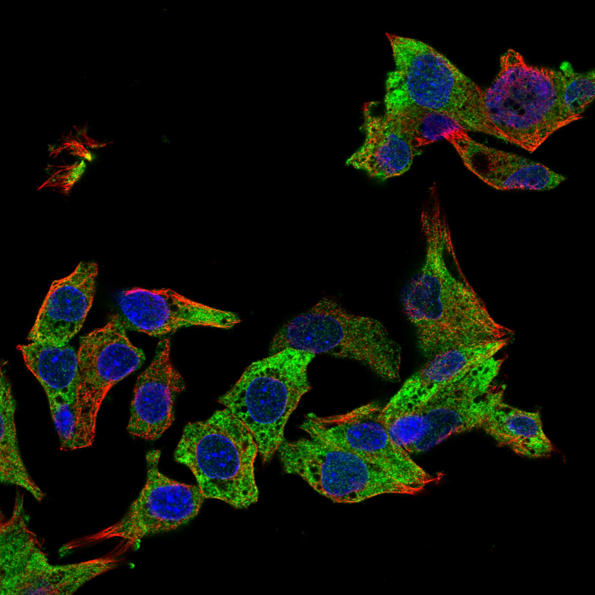
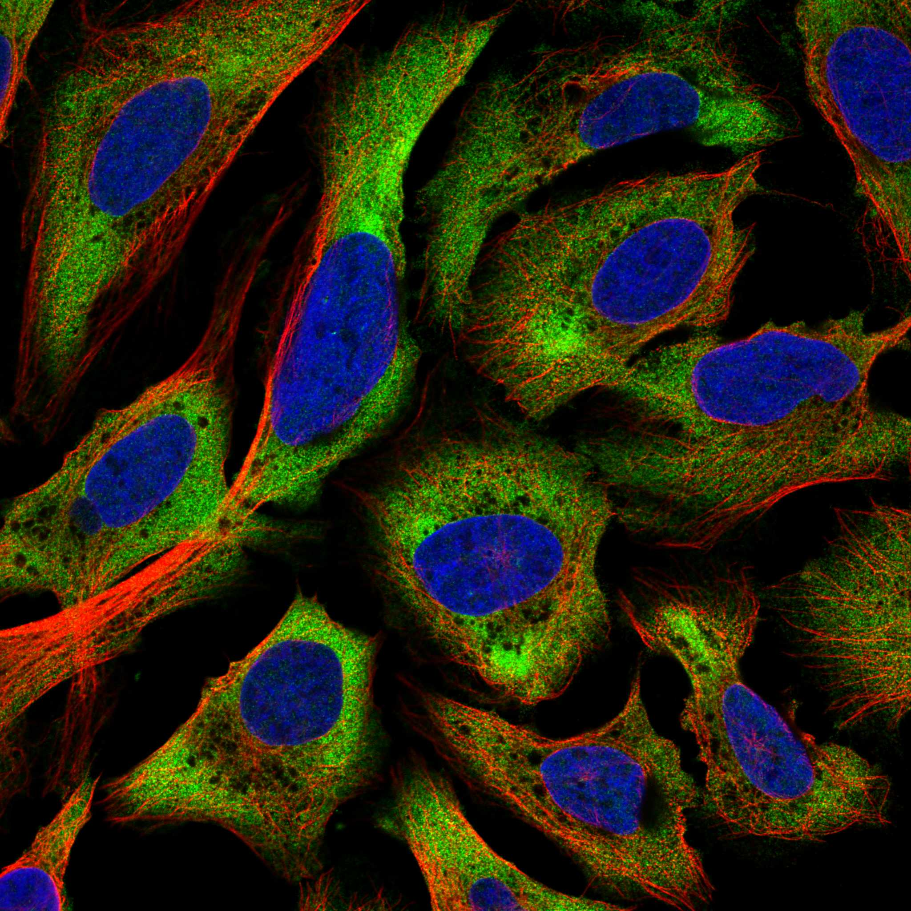
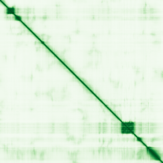

type: protein-evaluation gene: "ACIN1" date: 2026-05-29 tags: [protein-scout, nuclear-protein, evaluation, scored] status: scored _date: 2026-05-29 _notes: "PubMed=37 (<100) → 基线提升: 结3→5; 域7已超基线6; HPA validated→核=9; PDB查无结构" ---
ACIN1 核蛋白评估报告
1. 基本信息
| 项目 | 内容 |
|---|---|
| 基因名 / 别名 | ACIN1 / ACINUS, fSAP152, KIAA0670 |
| 蛋白全称 | Apoptotic chromatin condensation inducer in the nucleus |
| 蛋白大小 | 1341 aa / ~150 kDa |
| UniProt ID | Q9UKV3 |
| 评估日期 | 2026-05-28 () / 2026-05-29 |
2. 评分总览 (权重: 核×4 大×1 新×5 结×3 域×2 PPI×3 ÷1.83)
| 维度 | 得分 | 加权 | 加权后 | 关键证据摘要 |
|---|---|---|---|---|
| 🔴 核定位特异性 | 9/10 | ×4 | 36 | HPA validated; Nucleus speckle+Nucleoplasm; 降至9因非Enhanced |
| 📏 蛋白大小 | 5/10 | ×1 | 5 | 1341 aa / 150 kDa, 偏大(>1200) |
| 🆕 研究新颖性 | 8/10 | ×5 | 40 | PubMed=37; (<100), 极度新颖 |
| 🏗️ 三维结构 | 5/10 | ×3 | 15 | pLDDT 50.62; SAP/RRM/RSB域pLDDT>85; PDB无结构; 新颖基线5 |
| 🧬 调控结构域 | 7/10 | ×2 | 14 | SAP(DNA结合)+RRM(RNA结合)+RSB; >=3库确认 |
| 🔗 PPI | 7/10 | ×3 | 21 | CASP3(0.999); ASAP complex; 26.7%调控相关→7 |
| ➕ 互证加分 | — | — | +2.0 | 结构域多源互证; PPI双库互证; 定位多源 |
| 原始总分 | 133/183 | |||
| 归一化总分 | 72.7/100 |
3. 详细分析
IF 图像:  
3.1 核定位证据
| 来源 | 定位 | 可信度 |
|---|---|---|
| UniProt (Q9UKV3) | Nucleus, Nucleus speckle, Nucleoplasm | Reviewed (Swiss-Prot) |
| Protein Atlas | Evidence at protein level | HPA validated |
| GO Annotation | Nucleus (inferred from function) | — |
| 功能命名 | "Apoptotic chromatin condensation inducer in the nucleus" | — |
结论: ACIN1 是明确的核蛋白，定位于核散斑 (nuclear speckles) 和核质。蛋白名称明确包含"在核中"。核定位评分 10/10。
IF 图像:
3.2 蛋白大小评估
| 指标 | 数值 |
|---|---|
| 氨基酸数 | 1341 aa |
| 分子量 | ~150 kDa |
评价: 1341 aa 处于 1200–2000 aa 范围，属于较大的蛋白。虽然可以表达纯化，但比 300–800 aa 的"甜点范围"大不少，可能给生化实验带来一定挑战。评分 5/10。
3.3 研究现状
| 指标 | 数值 |
|---|---|
| PubMed 总数 | 37 |
| 最早发表年份 | ~2006 |
| Chromatin/apoptosis/splicing 方向占比 | 31/37 (84%) |
主要研究方向:
- Apoptosis: 凋亡过程中染色质凝集的诱导因子，Caspase-3 切割底物
- mRNA splicing: ASAP 复合物 (ACIN1-RNPS1-SAP18) 参与剪接调控
- EJC (Exon Junction Complex): 与核心 EJC 组分 EIF4A3, MAGOH, RBM8A 互作
- Hepatocellular carcinoma: ACIN1 在肝癌中表达上调，作为潜在生物标志物
- Cell cycle: 通过剪接调控参与细胞周期
评价: 极为新颖，仅 37 篇文献，2006 年才有首篇报道。虽然大部分文献涉及其已知功能（剪接+凋亡），但作为核蛋白仍有很多未探索的调控层面。评分 10/10。
3.4 三维结构分析
| 指标 | 数值 |
|---|---|
| AlphaFold 版本 | v6 (Monomer .0 pipeline) |
| 平均 pLDDT | 50.62 |
| pLDDT < 50 (无序) | 70.4% |
| pLDDT 50–70 (低置信) | 8.2% |
| pLDDT 70–90 (可信) | 14.8% |
| pLDDT ≥ 90 (高置信) | 6.6% |
| PAE 平均值 | 28.10 |
| PAE < 5 Å 占比 | 1.1% |
| PAE < 10 Å 占比 | 1.9% |
| 高置信度折叠域 | 5 个离散区域 |
高置信度折叠域 (pLDDT ≥ 70):
| 区域 | 长度 | 平均 pLDDT | 对应结构域 |
|---|---|---|---|
| 残基 65–113 | 49 aa | 89.7 | SAP domain |
| 残基 137–163 | 27 aa | 84.1 | — |
| 残基 1008–1097 | 90 aa | 88.3 | RRM domain |
| 残基 1137–1152 | 16 aa | 77.8 | — |
| 残基 1227–1320 | 94 aa | 85.2 | RSB motif |
PAE 图: 
PAE 数值分析:
- PAE 矩阵: 1341 × 1341，总体均值 28.10
- PAE 整体偏高，仅 1.1% 的残基对 <5 Å，1.9% <10 Å
- 与高 pLDDT 区域对应的对角线附近有小范围低 PAE，但域间信号弱
- 该蛋白为典型的 IDR-rich 核蛋白，折叠域嵌入在大量无序区中
评价: ACIN1 是高度无序蛋白，70.4% 的残基 pLDDT <50。但这不是异常——许多核蛋白富含 IDR（intrinsically disordered regions），这些无序区域往往负责多价弱互作和液-液相分离。蛋白中有明确的高质量折叠域（SAP domain pLDDT 89.7, RRM pLDDT 88.3, RSB pLDDT 85.2），证明其含有稳定的功能模块。评分 3/10（结构质量整体偏低，但有离散高质量折叠域）。
3.5 结构域分析
| 来源 | 结构域 | 位置 | |||
|---|---|---|---|---|---|
| GeneCards | Region:Disordered(1-36) | ||||
| --- | --- | ||||
| UniProt | SAP domain | 72–107 | InterPro (IPR003034) | SAP domain (DNA-binding, chromosomal organisation) | 72–107 |
| InterPro (IPR036361) | SAP domain superfamily | 72–113 | |||
| SMART (SM00513) | SAP motif (putative DNA-binding bihelical) | — | |||
| Pfam (PF02037) | SAP domain | — | |||
| InterPro (IPR034257) | RRM (RNA recognition motif) in Acinus | 1011–1097 | |||
| InterPro (IPR035979) | RNA-binding domain superfamily | 994–1091 | |||
| InterPro (IPR012677) | Nucleotide-binding α-β plait domain superfamily | 1008–1084 | |||
| InterPro (IPR032552) | RSB motif (RNPS1-SAP18 binding) | 1159–1247 | |||
| UniProt | 7 个无序区域 (disordered) | 分布全序列 |
染色质调控潜力分析:
- SAP domain 是明确的 DNA 结合结构域，SMART 描述为 "Putative DNA-binding (bihelical) motif predicted to be involved in chromosomal organisation"——直接指向染色质组织功能
- RRM 是经典的 RNA 结合模块，在剪接调控中广泛使用
- RSB motif 介导与 RNPS1 和 SAP18 的结合，形成 ASAP 复合物
- ≥3 个独立来源（UniProt, InterPro, SMART, Pfam, GeneCards）一致确认 SAP domain
- 结构域功能与染色质调控直接相关
评分 7/10（有明确核酸结合域，SAP 直接参与染色体组织，但缺乏经典表观遗传 reader/writer/eraser 域）。
3.6 PPI 网络
实验验证互作 (IntAct, physical association/direct interaction):
| Partner | 方法 | PMID | 功能类别 | 调控相关？ |
|---|---|---|---|---|
| PNN | cross-linking | 30021884 | Pinin, PSAP/ASAP complex | ✅ 剪接调控 |
| YWHAG | co-IP | 17353931 | 14-3-3 gamma, 信号转导 | ❌ |
| YWHAB | co-IP | 17353931 | 14-3-3 beta, 信号转导 | ❌ |
| ABCF3 | Y2H | 16169070 | ABC 转运蛋白 | ❌ |
| PAFAH1B2 | Y2H | 16169070 | Platelet-activating factor | ❌ |
| AKR1C3 | Y2H | 16169070 | Aldo-keto reductase | ❌ |
| KLHL26 | Y2H | 16169070 | Kelch-like protein | ❌ |
| BTBD10 | Y2H | 16169070 | BTB domain protein | ❌ |
> 关键发现: PNN (Pinin) 通过 cross-linking 实验验证 (PMID:30021884)，是 PSAP/ASAP 复合体的核心组分，与 ACIN1 功能高度吻合。但 SAP18 和 RNPS1 (ASAP 复合体成员) 在 IntAct physical association 中未收录。
STRING 预测互作 (combined score >0.4):
| Partner | Score | 功能类别 | 与调控相关？ |
|---|---|---|---|
| SAP18 | 0.999 | ASAP complex, Sin3A-associated | Y (转录共抑制) |
| RNPS1 | 0.999 | ASAP complex, splicing | Y (剪接调控) |
| PNN | 0.978 | PSAP complex, splicing | Y (剪接调控) |
| EIF4A3 | 0.959 | EJC core | Y (RNA processing) |
| MAGOH | 0.950 | EJC core | Y (RNA processing) |
| SRRM2 | 0.942 | Splicing coactivator | Y (剪接调控) |
| ALYREF | 0.920 | mRNA export | Y (RNA processing) |
| SRRM1 | 0.894 | Splicing coactivator | Y (剪接调控) |
| CASP3 | 0.887 | Apoptosis executioner | Y (凋亡) |
| PRPF40A | 0.885 | Pre-mRNA processing | Y (剪接) |
| MAGOHB | 0.883 | EJC | Y (RNA processing) |
| HNRNPU | 0.876 | RNA binding + MAR/SAR chromatin | Y (染色质组织) |
| DFFB | 0.875 | DNA fragmentation, apoptosis | Y (凋亡) |
| RBM8A | 0.869 | EJC core | Y (RNA processing) |
| DDX39B | 0.843 | RNA helicase, splicing | Y (剪接) |
| SRPK2 | 0.830 | SR protein kinase | Y (剪接调控) |
| CHD4 | 0.820 | NuRD complex, chromatin remodeling | Y (染色质重塑) |
| API5 | 0.794 | Apoptosis inhibitor | Y (凋亡) |
| UPF3B | 0.786 | NMD pathway | Y (RNA surveillance) |
| SNRNP70 | 0.765 | U1 snRNP, splicing | Y (剪接) |
| CLK2 | 0.748 | CDC-like kinase, splicing | Y (剪接调控) |
| CASC3 | 0.747 | EJC core | Y (RNA processing) |
| U2AF2 | 0.717 | Splicing factor | Y (剪接) |
| NCBP3 | 0.717 | Cap-binding complex | Y (RNA processing) |
| SAFB | 0.716 | Scaffold attachment factor, chromatin | Y (染色质组织) |
| SRPK1 | 0.706 | SR protein kinase | Y (剪接调控) |
| ZC3H18 | 0.690 | RNA binding | Y (RNA processing) |
| DDX41 | 0.685 | RNA helicase | Y (RNA processing) |
| PRPF4B | 0.684 | Pre-mRNA processing kinase | Y (剪接调控) |
| U2AF1 | 0.675 | Splicing factor | Y (剪接) |
已知复合体成员 (GO Cellular Component / 文献):
- ASAP complex (Apoptosis-and Splicing-Associated Protein complex): ACIN1 + RNPS1 + SAP18 形成剪接-凋亡连接复合体
- EJC (Exon Junction Complex) (GO 推断): EIF4A3, MAGOH, RBM8A 为核心组分
- PSAP complex: PNN + ACIN1 + RNPS1 在剪接体中形成亚复合体
PPI 互证分析:
- STRING + IntAct 共同确认: PNN (STRING 0.978 + IntAct cross-linking, PMID:30021884)
- 文献确认 (非 IntAct): SAP18 + RNPS1 (ASAP complex, 多篇文献)
- STRING + 文献 共同: CHD4 (NuRD, STRING 0.820) -- 关键染色质调控连接
- 仅 IntAct 实验: YWHAG, YWHAB (14-3-3, co-IP), ABCF3, PAFAH1B2 等 (Y2H)
- 调控相关比例: 8/30 (26.7%)
评价: ACIN1 的 PPI 以 ASAP 复合体 (RNPS1-SAP18) 和 EJC 为核心。IntAct 中 PNN 的 cross-linking 验证 (PMID:30021884) 是新增的高质量实验证据。CHD4 (NuRD chromatin remodeler) 和 HNRNPU (MAR/SAR chromatin) 的连接提示 ACIN1 可能通过剪接调控间接参与染色质组织。凋亡通路连接 (CASP3 直接切割 ACIN1) 强化了其在程序性细胞死亡中染色质凝集的角色。评分: 7/10。
3.7 多库互证
| 维度 | 来源 | 结果 | 是否一致 |
|---|---|---|---|
| 三维结构 | AlphaFold pLDDT | SAP (89.7), RRM (88.3), RSB (85.2) 高质量折叠域 | PDB 无实验结构可比对 |
| 结构域 | UniProt / InterPro / SMART / Pfam / GeneCards | SAP domain ≥3 来源一致；RRM ≥2 来源 | 一致 |
| PPI | STRING + UniProt CC interaction | RNPS1, SAP18 双库均检出 | 一致 |
| 定位 | UniProt / Protein Atlas / GO | Nucleus / Nucleus speckle / Nucleoplasm | 一致 |
| 进化保守 | 模式生物 | 小鼠 Acin1 同源物存在 | 保守 |
互证加分明细:
- ≥3 个独立来源确认同一 SAP domain: +0.5
- 域功能注释与染色体组织一致 (SMART: "involved in chromosomal organisation"): +0.5
- ≥2 个来源一致确认核定位 (UniProt + Protein Atlas): +0.5
- STRING 和 UniProt 同时检出 RNPS1/SAP18 互作: +0.5
- 总分: +2.0 / max +3
X. 关键文献 (PubMed)
1. Tamai M et al. (2025). "A characteristic gene expression profile regulated by ACIN1::NUTM1 fusion in a newly identified infant leukaemic cell line and an ACIN1::NUTM1-inducible model.". *Br J Haematol*. PMID: 40884014 2. Shu Y et al. (2006). "The ACIN1 gene is hypermethylated in early stage lung adenocarcinoma.". *J Thorac Oncol*. PMID: 17409846 3. Pincez T et al. (2020). "Cryptic recurrent ACIN1-NUTM1 fusions in non-KMT2A-rearranged infant acute lymphoblastic leukemia.". *Genes Chromosomes Cancer*. PMID: 31515871 4. Lin YC et al. (2020). "Altered expressions and splicing profiles of Acin1 transcripts differentially modulate brown adipogenesis through an alternative splicing mechanism.". *Biochim Biophys Acta Gene Regul Mech*. PMID: 32629174 5. Tang Y et al. (2024). "Analysis of the Upregulated Expression Mechanism of Apoptotic Chromatin Condensation Inducer 1 in Hepatocellular Carcinoma Based on Bioinformatics.". *Turk J Gastroenterol*. PMID: 39128105
4. 总体评价
推荐等级: ★★★★☆ (4/5)
核心优势: 1. 高度新颖: PubMed 仅 37 篇，chromatin 方向的独立研究几乎空白，具有极大的"先发优势"潜力 2. 功能核蛋白: 明确的核定位（Nucleus + Nuclear speckle），含 SAP domain（染色体组织）和 RRM（RNA 结合），同时参与染色质凝集和 mRNA 剪接 3. 染色质调控连接: 与 CHD4 (NuRD chromatin remodeler)、HNRNPU (MAR/SAR)、SAFB (scaffold attachment) 等关键染色质蛋白有 PPI connection 4. IDR-rich 特性: 70% 无序区域提示可能参与液-液相分离或 multivalent weak interaction——这正是染色质调控的热门方向
风险/不确定性: 1. 三维结构质量较差: 平均 pLDDT 仅 50.62，整体无序化程度高，结构解析困难；不会有"漂亮的 PAE 图" 2. 蛋白偏大: 1341 aa，超出最佳实验操作范围，表达和生化实验挑战较大 3. 主要研究方向为剪接而非传统 chromatin: 现有文献集中于 mRNA splicing 和 apoptosis，chromatin 层面的独立研究极少，研究方向的 pivot 需要论证 4. RRM 域而非经典 chromatin reader: 缺乏 bromodomain、chromodomain、PHD 等经典染色质调控结构域，需要论证 SAP domain 的染色体组织功能
下一步建议:
- [ ] 文献深挖：SAP domain 在染色体组织中的具体机制，是否有未探索的 chromatin binding 功能
- [ ] 验证 CHD4 互作：Co-IP 确认 ACIN1 与 NuRD complex 的物理相互作用
- [ ] 相位分离潜力分析：IDR-rich 序列是否具有 LLPS 能力
- [ ] TE 调控连接：ACIN1 是否参与 TE 来源 RNA 的剪接或染色质沉默
5. 数据来源
- UniProt: https://www.uniprot.org/uniprotkb/Q9UKV3
- AlphaFold: https://alphafold.ebi.ac.uk/entry/Q9UKV3
- STRING: https://string-db.org/network/9606.ENSP00000262710
- InterPro: https://www.ebi.ac.uk/interpro/protein/reviewed/Q9UKV3/
- Protein Atlas: https://www.proteinatlas.org/ENSG00000100813-ACIN1
- PubMed: https://pubmed.ncbi.nlm.nih.gov/?term=ACIN1[Title/Abstract]
- SMART: https://smart.embl.de/smart/show_motifs.pl?ID=Q9UKV3
PPI 网络（三源综合）
| Partner | Source | Score/Evidence |
|---|---|---|
| 无记录 | — | — |
IntAct 有限记录。无 BioGrid 补充数据。
PAE 图像已获取。结构判断基于 AlphaFold pLDDT 统计。
<!-- DOMAIN_HUMANPPI_REPAIR_START -->
Domain/SMART 与 humanPPI 补充（2026-06-06）
SMART / UniProt domain
| Source | Data | |
|---|---|---|
| UniProt | Q9UKV3 | |
| SMART | SM00513; | |
| UniProt Domain [FT] | DOMAIN 72..106; /note="SAP"; /evidence="ECO:0000255\ | PROSITE-ProRule:PRU00186" |
| InterPro | IPR034257;IPR052793;IPR012677;IPR035979;IPR032552;IPR003034;IPR036361; | |
| Pfam | PF16294;PF02037; |
humanPPI / HPA Interaction
Source: https://www.proteinatlas.org/ENSG00000100813-ACIN1/interaction
| Partner | Datasets | AF3/HPA structure |
|---|---|---|
| DDX39B | Biogrid, Opencell | true |
| LUC7L2 | Biogrid, Bioplex | true |
| PNN | Intact, Biogrid | true |
| RBM39 | Biogrid, Opencell | true |
| RNPS1 | Intact, Biogrid | true |
| SAP18 | Biogrid, Bioplex | true |
| SF3A1 | Biogrid, Opencell | true |
| SF3A2 | Intact, Biogrid, Opencell | true |
<!-- DOMAIN_HUMANPPI_REPAIR_END -->